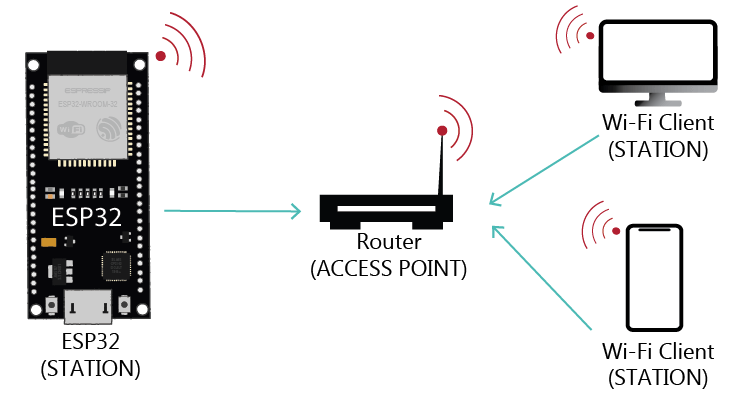
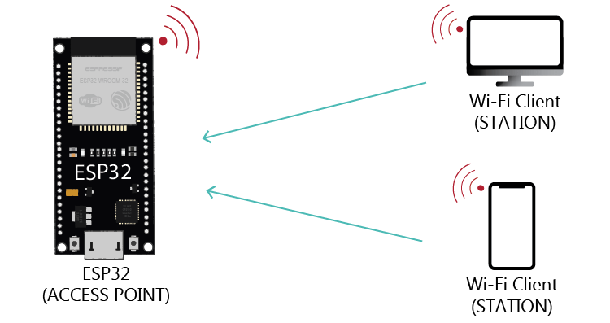

Comment ça marche ?
Il existe plusieurs façons différentes d'initialiser le mode WiFi d'un ESP32.
- Les terminaux qui se connectent aux réseaux WiFi proposés par des Access Points sont appelés des stations (mode WIFI_STA).

- Les terminaux peuvent fournir un point d'accès ou Access Point (WIFI-AP) et se comporter comme un hub pour une ou plusieurs stations. Classiquement un Access Point est connecté à un réseau filaire et intégre un routeur pour donner accès à internet via le WiFi. Chaque Access Point fournit un SSID (Service Set IDentifier) visible et accessible pour les stations (autres terminaux comme un téléphone mobile ou un ordinateur).

- Les terminaux peuvent également activer les 2 modes de fonctionnement en même temps (Station et Access Point, en mode WIFI_AP_STA).
Principales fonctions
Les principales fonctions de la librairie ESP8266WiFi sont :
- Wifi.mode(<MODE>) qui prend en paramètre un des modes suivants :
- WIFI_STA quand la carte veut accéder à une réseau WiFi en mode client
- WIFI_AP quand la carte veut être un point d'accès (être un SSID)
- WIFI_AP_STA pour faire les 2 à la fois
- WIFI_OFF comme son nom l'indique
- WiFi.begin("nom-du-SSID", "mot-de-passe")
- WiFi.status() qui vous retourne
- 0 : WL_IDLE_STATUS when Wi-Fi is in process of changing between statuses
- 1 : WL_NO_SSID_AVAIL quand le SSID indiqué n'est pas atteingnable
- 3 : WL_CONNECTED quand la connexion a été établi
- 4 : WL_CONNECT_FAILED si le mot de passe du SSID est incorrect
- 6 : WL_DISCONNECTED si le module n'est pas configuration en mode Station
- WiFi.localIP() en mode WIFI_STA affiche l'adresse IP de la carte
- WiFi.scanNetworks() vous permet de scanner et récupérer les informations sur les SSID à portée.
Les classes WiFiClient et WiFiServer vous permettent de manipuler les communications en tant que client ou server.
Prise en main
Pour prendre en main le Wifi sur votre carte, je vous invite à découvrir les fichiers exemples suivants :
- Exemples/WiFi/WiFiScan scanne les réseaux WiFi (Access Points) visibles par la carte qui est en mode STAtion et de les liste sur le moniteur de sortie.
- Exemples/WiFi/WiFiClient permet à la carte d'accéder à un réseau WiFi en mode STAtion; la sélection du réseau WiFi se fait en remplissant les valeurs de STASSID et STAPSK. Une fois connecté la carte créé un client WiFi TCP et va requéter un serveur et afficher les informations qu'elle récupère.
- Exemples/WiFi/WiFiMulti permet de lister plusieurs Access Points auquels vous souhaitez/pouvez accéder. Si le premier SSID n'est pas disponible alors la carte tente de se connecter au suivant ... Cette fonctionnalité est proposée par la classe WiFiMulti. Vous pouvez ainsi configurer les réseaux WiFi de l'école, de chez vous et celui de votre téléphone, par exemple. A noter qu'il faut bien penser à appeler la méthode wifiMulti.run() dans la loop() pour surveiller l'état de la connexion à chaque itération et faire le nécessaire si besoin est.
- Exemples/WiFi/WiFiClientBasic se connecte en mode STA à un SSID via WiFiMulti et réalise une requête à un serveur HTTP, récupère la réponse du serveur et l'affiche sur le moniteur série; et recommence 10 seconds après.
- Exemples/WiFi/WiFiAccessPoint permet de créer un point d'accès WiFi. En lançant cet exemple la carte crée un réseau WiFi avec le nom renseigné dans ssid; vous pourrez le voir depuis votre ordinateur ou votre téléphone, et y accéder en renseignant le mot de passe indiqué dans password. Une fois connecté, vous pourrez vous rendre sur l'adresse http://192.168.4.1 depuis un navigateur web et la carte vous renverra le code HTML présent dans la méthode handleRoot() que le serveur appelle pour la route "/".
- Exemples/DNSServer/CaptivePortal démarre la carte en mode Access Point et répond à toutes les requêtes en retournant une page web. Ainsi dès qu'un terminal (ordinateur, téléphone ...) se connecte au SSID il est routé sur le portail captif sur la base de cette page web.
Je vous invite à installer la librairie WiFiManager et à tester l'exemple fourni :
- Dans le menu "Outils/Gérer les bibliothèques", renseigner "captive" dans la barre de recherche et installez la dernière version de WiFiManager dy Tablatronix.
- Dans tester l'exemple qui se trouve sur Exemple/WiFiManager/Basic.
Exemple
Dans cet exemple, l'objet est utilisé avec les 2 modes Access Point et Station :
- Access Point pour que l'utilisateur puisse accéder à un serveur web proposé par la carte
- Station pour se connecter à un Access Point pour accéder au réseau externe (internet).
Je peux ajouter un serveur DNS pour réaliser un portail captif ...
 1.9.6
1.9.6